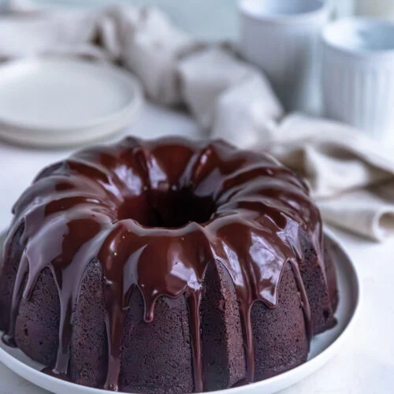

Chocolate Cake
Home Page

Description
You're not going to believe how perfectly moist and intensely chocolatey this cake is! This easy one-bowl, do-it-all recipe can be used to bake a sheet cake, layer cake, or cupcakes, so it's perfect for any occasion. If you need a chocolate cake recipe for a birthday celebration, graduation party, bridal or baby shower, or just because... this moist and fudgy chocolate cake is it!
This cake is giving serious Matilda chocolate cake vibes. I know my fellow '90s kids know what I'm talking about... the scene in the 1996 movie when Matilda's classmate, Bruce, devours Miss Trunchbull's chocolate cake. The scene is gross, but the cake looks totally indulgent and delicious.
Ingredients
- 2 cups (240 grams) all-purpose flour
- ¾ cup (63 grams) cocoa powder (Dutch processed or natural unsweetened)
- 2 teaspoons (8 grams) baking powder
- 1 ½ teaspoons (10 grams) baking soda
- 1 teaspoon (6 grams) fine sea salt
- ¾ cup (170 grams) whole milk
- ½ cup (100 grams) vegetable oil
- ¼ cup (56 grams) full-fat sour creamr
- 2 large eggs, lightly beaten
- 2 teaspoons (10 grams) vanilla extract
- 1 cup (227 grams) hot coffee
- Chocolate Ganache Buttercream Frosting (or other frosting of your choosing)
Steps
Make the Cake Batter
- Preheat oven to 350º F. Line a 9x13 metal baking pan with parchment paper and set aside. *See recipe note for baking round cake layers or cupcakes.
- In a large bowl, whisk together flour, sugar, cocoa powder, baking powder, baking soda, and salt.
- To the dry ingredients add milk, oil, sour cream, eggs, and vanilla. Stir until well combined. The batter will be thick, similar to the texture of brownie batter.
- Add hot coffee to the batter, carefully mixing with a whisk until well blended. The batter will now be very thin.
Bake the Cake
- Pour the cake batter into the prepared cake pan.
- Bake the cake for 30-35 minutes, or until the top sprigs back when gently poked and a cake tester inserted into the center of the cake comes out clean or with just a few moist crumbs.
- Let the cake cool completely before frosting or storing.